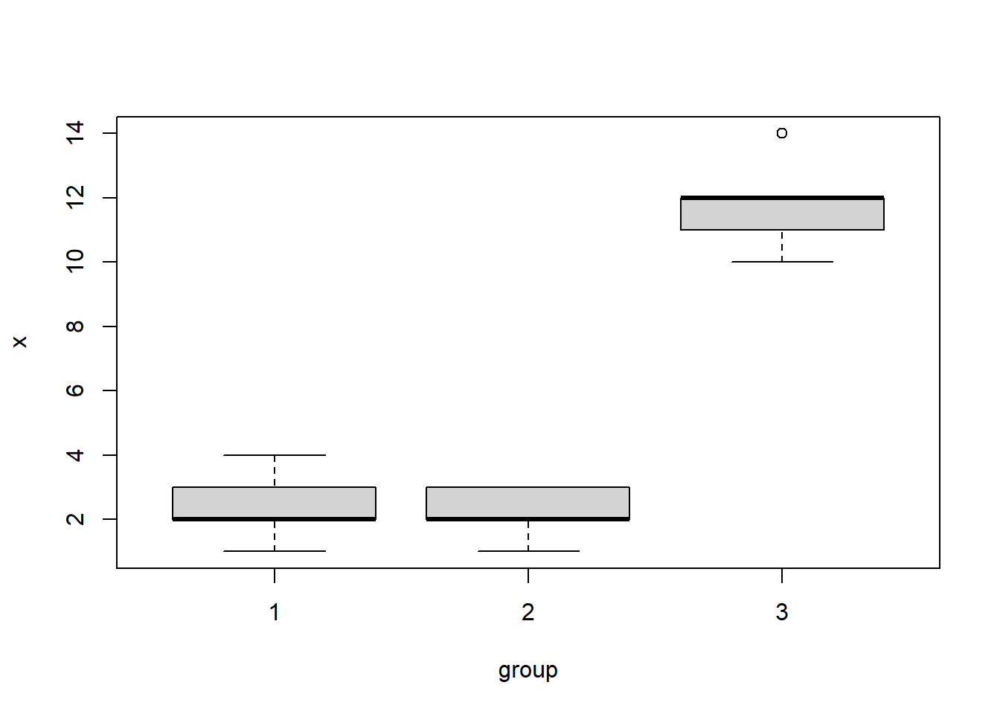

Chapter 4 Functions
4.1 User-defined Functions
Functions are constructs that encapsulate series of statements for convenience so you do not repeat the same statements all over again when needed.
Function construct:
# (1) default return value is the last statment
functionName <- function(...) {
statement
...
<value>
}
# (2) return(...)
functionName <- function(...) {
statement
...
return(<value>)
} Example:
The following function add_one increments its argument by 1:
add_one <- function(x) {
x + 1
}
add_one(2)## [1] 3add_one(-1)## [1] 0Now let’s update our function to calculate \(x^2 + 1\) :
square_add_one <- function(x) {
result <- x^2 # choose a variable for temporary result
result + 1
}
square_add_one(2) # 2^2 + 1 = 5## [1] 5square_add_one(-1) # (-1)^2 + 1 = 2## [1] 2The following versions of this functions are all equivalent:
# (v1) One operation per line.
square_add_one <- function(x) {
result <- x^2
result <- result + 1
result # The last statement is returned as the value.
}
# (v2) No additional 'result' variable needed
square_add_one <- function(x) {
x^2 + 1
}Multiple arguments Functions may take as many arguments as needed. Recall the function add_one defined above, now we would like to have a more generic function to increment by a value other
than a constant 1 :
increment <- function(x,i) {
# increment x by i
x + i
}
increment(2,1) # <=> add_one(2)## [1] 3increment(11,2) # increment 11 by 2## [1] 13You may use the argument names explicitly:
increment( x = 14, i = 7 ) # increment 14 by 7## [1] 21Now let’s write a function which is not already part of the base R, e.g. odd. This function will take as an argument a whole number and returns a logical TRUE if the number is an odd number and FALSE otherwise.
A whole number is odd when it is not integer divisible by 2. We can do this by taking it’s remainder of integer division (%% operator) by 2 and see whether it is non-zero:
odd <- function(x) {
x %% 2 != 0
}
odd(31) ## [1] TRUEodd( x = 6 )## [1] FALSEObservations:
- User-defined functions lead to a more structured code.
- Variables declared inside a function cease to exist once the function terminates.
- Arguments are given in the same order as they are declared in the function except when the argument names are provided explicitly.
Quick task(s):
Solve the task(s), and check your solution(s) here.
4.2 (*) Control flow constructs
Or conditional statements are constructs controlling the program sequence being executed. Based on the conditions we impose into the program we can influence the outcome.
4.2.1 Sequential execution
statement_1
statement_2; statement_34.2.2 Conditional execution: if
# Only if 'condition' variable evaluates to TRUE the
# statement_T is executed.
#
# condition is TRUE => statement_A ; statement_T ; statement_B
# condition is FALSE => statement_A ; statement_B
statement_A
if ( condition ) {
statement_T
}
statement_B4.2.3 Conditional execution: if/else
# condition is TRUE => statement_A ; statement_T ; statement_B
# condition is FALSE => statement_A ; statement_F ; statement_B
statement_A
if ( condition ) {
statement_T
} else {
statement_F
}
statement_BExample:
Let’s take the following excerpt from the World Health Organization (WHO):
An adult is a person older than 19 years of age unless national law defines a person as being an adult at an earlier age. An adolescent is a person aged 10 to 19 years inclusive. A child is a person 19 years or younger unless national law defines a person to be an adult at an earlier age. However, in these guidelines when a person falls into the 10 to 19 age category they are referred to as an adolescent (see adolescent definition). An infant is a child younger than one year of age.
Now we would like to write a function, given the age in years, to evaluate the appropriate age group label for us. For this we need conditional statements.
Important First we enumerate the age group categories:
| classification | bmi | notation | |
|---|---|---|---|
| 1 | adult | >19 | (19,8) |
| 2 | adolescent | >=10 and <=19 | [10,19] |
| 3 | child | >=1 and <=9 | [1,9] |
| 4 | infant | <1 | (-8,1) |
Here is a template of the AgeGroup function:
#
# Template
#
AgeGroup <- function(x) {
# x : is age in year
}
AgeGroup(0) # "infant"
AgeGroup(10) # "adolescent"
AgeGroup(9) # "child"
AgeGroup(20) # "adult"Scenario 1 : if
Let’s first assume that everybody is a child:
AgeGroup <- function(x) {
# x : is age in year
theLabel <- "child"
theLabel
}
AgeGroup(0) # "infant"## [1] "child"AgeGroup(10) # "adolescent"## [1] "child"AgeGroup(9) # "child"## [1] "child"AgeGroup(20) # "adult"## [1] "child"Next we add a single conditional to capture adult label:
# child and adult
AgeGroup <- function(x) {
# x : is age in year
theLabel <- "child"
if ( x > 19 ) {
theLabel <- "adult"
}
theLabel
}
AgeGroup(0) # "infant"## [1] "child"AgeGroup(10) # "adolescent"## [1] "child"AgeGroup(9) # "child"## [1] "child"AgeGroup(20) # "adult"## [1] "adult"Finally we add the conditional statement to capture the labels adolescent and infant in the same way:
# version final
AgeGroup <- function(x) {
# x : is age in year
theLabel <- "child"
if ( x > 19 ) {
theLabel <- "adult"
}
if ( x >= 10 & x <= 19 ) {
theLabel <- "adolescent"
}
if ( x < 1 ) {
theLabel <- "infant"
}
theLabel
}
AgeGroup(0) # "infant"## [1] "infant"AgeGroup(10) # "adolescent"## [1] "adolescent"AgeGroup(9) # "child"## [1] "child"AgeGroup(20) # "adult"## [1] "adult"Scenario 2 : if/else
if conditional can be extended with else part. This is a more concise way to capture
labels:
AgeGroup <- function(x) {
# x : is age in year
# labels `adult` and `child`
if ( x > 19 ) {
theLabel <- "adult"
} else {
theLabel <- "child"
}
theLabel
}
AgeGroup(0) # "infant"## [1] "child"AgeGroup(10) # "adolescent"## [1] "child"AgeGroup(9) # "child"## [1] "child"AgeGroup(20) # "adult"## [1] "adult"Now as before we add other conditionals to capture adolescent and infant labels:
AgeGroup <- function(x) {
# x : is age in year
# labels `adult` and `child`
if ( x > 19 ) {
theLabel <- "adult"
} else {
theLabel <- "child"
}
# label `adolescent`
if ( x >= 10 & x <= 19 ) {
theLabel <- "adolescent"
}
# label `infant`
if ( x < 1 ) {
theLabel <- "infant"
}
theLabel
}
AgeGroup(0) # "infant"## [1] "infant"AgeGroup(10) # "adolescent"## [1] "adolescent"AgeGroup(9) # "child"## [1] "child"AgeGroup(20) # "adult"## [1] "adult"Scenario 2 : if/else/if …
It is also possible to have cascading if/else construct with multiple conditionals:
AgeGroup <- function(x) {
# x : is age in year
if ( x > 19 ) {
theLabel <- "adult"
} else if ( x >= 10 & x <= 19 ) {
theLabel <- "adolescent"
} else if ( x < 1 ) {
theLabel <- "infant"
} else {
theLabel <- "child"
}
theLabel
}
AgeGroup(0) # "infant"## [1] "infant"AgeGroup(10) # "adolescent"## [1] "adolescent"AgeGroup(9) # "child"## [1] "child"AgeGroup(20) # "adult"## [1] "adult"Quick task(s):
Solve the task(s), and check your solution(s) here.
4.3 apply family: apply, lapply, sapply, tapply
The apply family functions as the name suggests are a mechanism to apply a function to a sequence of predefined arguments.
4.3.1 apply(X, MARGIN, FUN, …)
X is a matrix (or data.frame) and the MARGIN is either 1 or 2 corresponding to row and column respectively. It applies the function FUN to each row or column depending on MARGIN value. The returned value is an array structure, i.e either a vector or a matrix, depending on the function FUN value.
If FUN returns a single value and not a vector then the return value is a vector:
# apply function to columns (MARGIN=2)
apply(pulse[,c("height","weight","age")],2, mean) ## height weight age
## 171.58182 66.33182 20.56364Applying mean to the columns pulse1 and pulse2 results into NA:
apply(pulse[,c("pulse1","pulse2")],2, mean) ## pulse1 pulse2
## NA NAThis is cause by missing values (NA’s) in pulse1 and pulse2. Note that it the function mean’s behavior that causes this:
mean( c(3,4,1,5,10) ) ## [1] 4.6mean( c(3,4,1,5,10,NA) ) ## [1] NAQuiz How can we get around NA’s and produce mean values for pulse measurements? (Hint: ?mean)
…
4.3.2 sapply(X, FUN, …)
This is an easy way of running any function for a range of values.
sapply(1:4, odd) # <=> unlist( lapply(1:4,odd) )## [1] TRUE FALSE TRUE FALSEThis is in fact a simplified, user-friendly lapply(), which we will see next.
Quick task(s):
Solve the task(s), and check your solution(s) here.
4.3.3 lapply(X, FUN, …) : apply a function to a list/vector
X is the sequence (vector/list) of elements on which the function FUN is applied to each element. The return value is always a list.
lapply(1:2, add_one) # vector as input## [[1]]
## [1] 2
##
## [[2]]
## [1] 3lapply(list(1,2), square_add_one) # list as input## [[1]]
## [1] 2
##
## [[2]]
## [1] 5Note that only the function name, e.g. add_one, is given without it’s argument, lapply is aware of the function’s argument and will instantiate the function first with 1 and then 2.
Quiz Rewrite lapply(1:2, add_one) by the function increment.
4.3.4 tapply(X, INDEX, FUN, …) : apply a function to a vector, according to groups of INDEX
Consider the data in the vector x and the grouping variable group:
x <- c(1, 2, 2, 4, 3, 1, 3, 2, 2, 3, 10, 12, 11, 14, 12)
group <- factor(rep(1:3, each = 5))We can display the data by using a boxplot:
boxplot(x ~ group)
To compute the means of values of x within groups defined by group we use:
tapply(x, INDEX = group, FUN = mean)## 1 2 3
## 2.4 2.2 11.8Anonymous functions Are functions used in R expressions without being declared with a name:
# odd: test whether a number is odd (named function)
lapply(1:4,odd)## [[1]]
## [1] TRUE
##
## [[2]]
## [1] FALSE
##
## [[3]]
## [1] TRUE
##
## [[4]]
## [1] FALSE# odd: test whether a number is odd (anonymous function)
lapply(1:4, function(x) { x %% 2 != 0 } ) ## [[1]]
## [1] TRUE
##
## [[2]]
## [1] FALSE
##
## [[3]]
## [1] TRUE
##
## [[4]]
## [1] FALSE4.4 Type checking
R language is not a strictly typed language. This means the programmer is responsible for making sure that variables involved in an assignment are of the same type. For example :
apple <- "123" # character
pear <- 123 # numeric
apple == pear # ? ## [1] TRUEapple + pear # ?## Error in apple + pear: non-numeric argument to binary operatorhere the last two operations should both produce an error because apple and pear are not of the same type, however R is more liberal towards logical comparison and produces a result even though the variables compared are not of the same type. The mechanism is called type coercion and the full detail is beyond the scope of this course but in short what happens here is that first pear is converted from numeric to character to make the comparison possible and then a lexicographical comparison (dictionary order) is carried out, i.e. :
"123" == "123" # character comparison## [1] TRUE4.4.1 is.* family functions
These are functions created to check a characteristic in/of the data. Some examples are:
# type checkinh
is.numeric("a")## [1] FALSEis.numeric(1)## [1] TRUEis.character("b")## [1] TRUEis.character( data.frame() )## [1] FALSEis.logical("TRUE")## [1] FALSEis.logical(TRUE)## [1] TRUE# missing values
is.na(NA)## [1] TRUEis.na( c(3,NA,0,-1,NA) )## [1] FALSE TRUE FALSE FALSE TRUEAll these functions return a logical objetc as response. Note that both:
is.na(3)## [1] FALSEand
is.na(NA)## [1] TRUEreturn an object with a single entry, whilst
is.na(c(3,NA,0,-1,NA))## [1] FALSE TRUE FALSE FALSE TRUEreturns an object which has one logical value for each entry in the input object. This function not only works with vectors as input, but also with matrices. Consider for example the following matrix, which involves some NA entries:
mat <- matrix(1:9, nrow = 3, ncol = 3)
mat[1, 2] <- mat[3, 2] <- NA
mat## [,1] [,2] [,3]
## [1,] 1 NA 7
## [2,] 2 5 8
## [3,] 3 NA 9Then if we apply is.na() to this object, we get:
is.na(mat)## [,1] [,2] [,3]
## [1,] FALSE TRUE FALSE
## [2,] FALSE FALSE FALSE
## [3,] FALSE TRUE FALSEwhich is an object with the same dimensions as the input object mat.
Quiz Compute the number of NA entries per row and per column of mat.
4.4.2 (*) stop(…)/warning(…)
When to issue:
Warnings : possibility of recovery and no potential harm to the end result
Errors : no possibility for recovery and potential harm to the end result
stop("your error message !")## Error in eval(expr, envir, enclos): your error message !warning("your warning message !")## Warning: your warning message !Example:
Recall the function AgeGroup which takes age as argument. The function as is now covers all positive numbers but there is a flaw in the function, it can not handle negative input.
AgeGroup(-10)## [1] "infant"which is an error. The function needs to be modified to prevent the erroneous answer as follows:
AgeGroup <- function(x) {
# x : is age in year
# error on x<0
if (x<0)
stop("invalid age !")
# x >= 0
if ( x > 19 ) {
theLabel <- "adult"
} else if ( x >= 10 & x <= 19 ) {
theLabel <- "adolescent"
} else if ( x < 1 ) {
theLabel <- "infant"
} else {
theLabel <- "child"
}
theLabel
}
AgeGroup(-10)## Error in AgeGroup(-10): invalid age !Quiz What about AgeGroup(1000) ?
Quick task(s):
Solve the task(s), and check your solution(s) here.
4.5 (*) R programming
4.5.1 General coding conventions
- Coding conventions: to improve readability and maintenance
- Identifiers: function names : AgeGroup or age_group variable names : theLabel
- Line Length: maximum 70-80 characters
- Indentation
- Curly Brace
- first on same line, last on own line
- else: Surround else with braces
- Assignment: use <-, not =
- Semicolons: don’t use them
- General layout and ordering (library, functions, main)
- Use existing R functions if possible.
- Write generic parts as functions for reuse
- Inline documentation
4.5.2 Finding, installing and loading packages
Package
- Is a bundle of function(s), possibly with data and binary code.
- R comes with packages already installed, e.g. base, utils, stats, methods, etc.
- External packages can be installed and loaded into the workspace
Main sources
- Comprehensive R Archive Network (CRAN)
- Bioconductor (genomic data)
Links